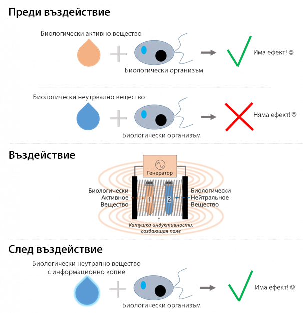
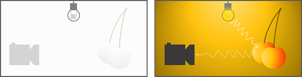
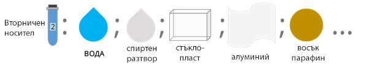
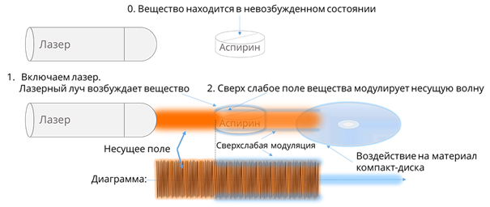
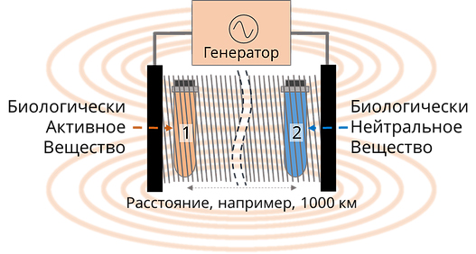
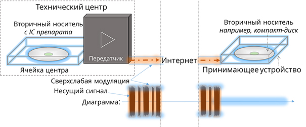
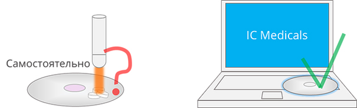

Технология за предаване на информационни копия
Отделете няколко минути, за да се запознаете с IC Medicals - технология за предаване на информационни копия на вещества през интернет.
Това си струва!
Понякога експеримента е следствие на теорията, а понякога теорията значително изпреварва експеримента.
В научната общност винаги има различия. Едни казват „това не е възможно“, други смятат, че много неща все още не знаем и затова трябва да достигнем до резултатите по пътя на експериментите.
Технологията IC Medicals има емпиричен характер, защото се развива на базата на експеримента. Процесите тук са така наречената „черна кутия“. Тоест съвременната наука все още не може да обясни. Но, както показва опита, не е задължително до края да се разбере как работи едно нещо. Например като с електричество. Ние го ползваме, но не всички го познаваме на теория.
Определяне на някои понятия:
- Биологично активно вещество (BAS) - вещество, което в малки количества (концентрации) може да предизвика реакция на биологичен организъм. Различните BAS предизвикат различни реакции в различните организми, а могат и да въздействат различно.
- Биологично неутрално вещество - вещество, което в малки количества (концентрации) не предизвикват забележими реакции в биологичния организъм.
Различни изследователи са установили, че когато биологично активното вещество се постави в непосредствена близост до биологично неутрално вещество, във външно електромагнитно поле с определени характеристики, резултатът е, че неутралното вещество придобива биологична активност!

По този начин, можем да заключим, че всяко вещество има информация за изображението, което може да се "отпечатва" на друго вещество чрез електромагнитно поле.
Ако вземете една камера и отидете в напълно тъмна стая и се опитате да направите снимка на нещо, без да използвате светкавица, ще се окаже, че не сте заснели нищо. За да се получи изображение (информация за изображението), на обекта е нужна светлината (електромагнитно поле), което се отразява от обекта и си взаимодейства с камерата.

Този принцип на прехвърляне на информация с помощта на характеристиките на електромагнитното поле, отдавна се използва, например, в хомеопатията.
Вторичният носител трябва да е биологично неутрално вещество. Като такива може да се използват вещества и материали като дестилирана вода, минерална или преварена обикновена питейна вода, физиологичен разтвор, пластмаса, стъкло, алуминиево фолио, восък, парафин, 30-40% - та етилов алкохол и други.

• обикновена лазерна показалка се използва като източник на електромагнитно поле (векторна информация за изображението)
• аспирин като активно вещество
• пластмасови плочи или конвенционален CD, състояща се от пластмаса и алуминий, като вторичен носител
Някакво вещество (да кажем аспирин) е в свободено състояние, като обект в тъмна стая.
Включваме светлина от лазерен източник и посредством лазерен лъч облъчваме таблетката. Да приемем (само да предположим, защото това е част от процеса в една „черна кутия“), че материалът преминава във възбудено състояние излъчва ултра-слабо електромагнитно поле, което модулира лазерния лъч. Тогава свръх слабо модулирания лазерен лъч взаимодейства с вторичния носител - CD диск и му променя статуса.
Какво точно се случва с материала на диска до този момент не е ясно, но експерименталните резултати показват, че така третирания диск е в състояние да даде специфичен ефект върху водата чрез промяна на някои параметри, например, рН, електропроводимост, и др.

По този начин, чрез поставяне на таблетката върху диска и лазерното осветяване IC информационното копие на аспирина се „записва“ на диска. След това можете да използвате вторичния превозвач (CD) за използване на водата, която е придобила свойствата на аспирина. За да стане това обаче, трябва да се постави стъклена чаша с вода з апиене върху диска, като изчакате поне половин час.
Използването на принципа, че електромагнитното поле е носител, позволява да се извърши прехвърляне на информационното изображение на аспирина на големи разстояния. Например, използването на много дълъг соленоид, единият край на който е основен източник на информация, а от другата – вторичен носител.
Така създавайки електромагнитна връзка, информацията се предава на вторичния носител.

Съставен елемент на технологията IC Medicals е технически център, който към момента се състои от 60 клетки. Във всяка клетка има вторично копие (IC) на дадено вещество. Специален интернет сайт (който ще стартира в началото на 2016г.), е интерфейсът за взаимодействие на потребителя с техническия център.
След избор на IC информационно копие, се задейства системата за връзка с информационния център, където се намира съответното копие на избраното вещество.
По така осъществената връзка се изпраща информационен пакет, който съдържа модулирана информация посредством електромагнитно поле. Това поле е носител на IC информационното копие, което се предава до отдалечения потребител.
Информационното копие (ултра-слабо поле) се предава изцяло. Например, ако поставите CD диска в записващото устройство на компютъра и дори направо върху клавиатурата, копието ще се пренесе върху диска. Т.е. ситуация, подобен на горния пример с помощта на лазерния лъч за прехвърляне.

Трябва отново да се отбележи, че технологията е разработена на базата на експериментите. Точното научно обяснение на прехвърлянето се нуждае от сериозни теоретични изследвания.
По развитието и усъвършенстването на технологията IC Medicals днес работят повече от 25 учени и лекари от цял свят и броят им се увеличава. Разбира се, всеки един от тях може да се справи самостоятелно със своята част на технологията, но хората се събират, за да се разработи единна и достъпна за всички система. Ето защо, IC Medicals е най-проучената на този етап технология.

На този етап от развитието на знанията за използването на IC информационни копия не може да се твърди, че химически лекарства са изцяло заменими.
Въпреки това, използването на IC информационни копия на лекарствените таблетките може да намали дневната доза и да увеличи двойно тяхното действие.
IC Medicals - това не е вълшебна пръчица и все още трябват усилия за подобряване на технологията.